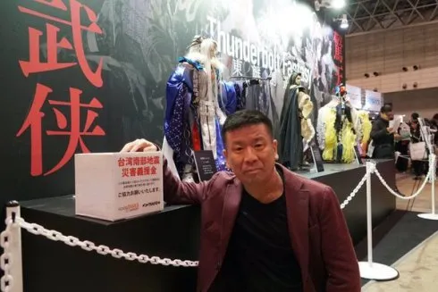

About Gen Urobuchi
Гэн Уробути (яп. 虚淵 玄, род. 1972) — японский сценарист, автор визуальных новелл и аниме.
Наиболее известен благодаря мрачным и философским сюжетам.
Он является сценаристом культовой визуальной новеллы Saya no Uta, созданной студией Nitroplus.
Краткая хронология
- 1972 — Родился в Японии
- 2003 — Написал сценарий к визуальной новелле Saya no Uta
- 2011 — Создал сценарий к Puella Magi Madoka Magica
- 2012 — Работал над Psycho-Pass
Основные работы
- Saya no Uta (2003)
- Fate/Zero (2011)
- Puella Magi Madoka Magica (2011)
- Psycho-Pass (2012)

Биография в Википедии |
Anime News Network
Learn More